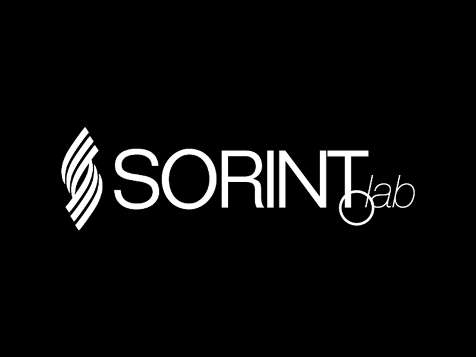

Sorint.US helps enterprise technology teams move from platform strategy to delivery and long-term operations across cloud, automation, reliability, security, and developer experience.

Some teams need a sharper strategy. Some need experienced platform engineers in the work. Others need a partner to operate and improve the platform after launch. Sorint.US supports each stage without forcing the same engagement model onto every client.
 Consulting
Consulting
Strategy, architecture, and platform roadmap
Define the target state, operating model, and delivery path before larger platform investments are made.
Explore consulting Acceleration
Acceleration
Embedded experts, leaders, and delivery squads
Add the specialist platform capacity needed to move approved roadmap work faster and with less drag.
Explore acceleration Managed Services
Managed Services
Operations, governance, and improvement
Run the platform with reliability coverage, automation upkeep, governance, support, and FinOps discipline.
Explore managed servicesSorint.US brings practitioners into the infrastructure, delivery, and operating concerns that decide whether a platform becomes useful or turns into another internal system to avoid.
Sorint.US is the U.S. division of Sorint.Lab, an enterprise technology company with more than three decades of experience across cloud, infrastructure, automation, managed services, security, data, and software delivery.
That parent-company depth matters for platform work. Clients can start with a focused U.S. advisory conversation, then draw on Sorint.Lab's wider engineering organization when the work needs specialist capacity, project delivery, cross-Atlantic coverage, or long-term operations.
Sorint.US gives U.S. technology leaders a direct platform-services partner while staying connected to Sorint.Lab's broader delivery network across the U.S. and Europe.

Visit Sorint.LabPlatform initiatives rarely fail because one tool is missing. They stall when strategy, architecture, staffing, delivery, and operations are treated as separate problems. Sorint.US gives enterprise teams a single engineering partner that can stay close to the work across the full lifecycle.

Platform recommendations come from practitioners who understand infrastructure, automation, security, reliability, and delivery tradeoffs.
Blend U.S. leadership presence with European engineering scale when the timeline, budget, and coverage model make that useful.
Move from consulting into delivery support, then managed services as the platform matures and needs steady stewardship.

Sorint designed and implemented an automation and compliance framework spanning provisioning, CI/CD, disaster recovery, patch management, and infrastructure optimization.

Sorint executed a cloud migration, upgraded JD Edwards, and established 24x7 managed services with stronger governance and FinOps discipline.
“Gold medal. SORINT could not do better, perfect! Every promise and every deadline was met!”

“The governance factor ensured the project is delivered within budget, while maintaining flexibility to adapt our evolving needs.”

“Synergy, timely management of reports, and consistent response time to operational needs stood out for us!”

Whether you need direction, delivery capacity, or operational ownership, Sorint.US can help map the practical next step.
Clarify strategy, architecture, roadmap, and delivery priorities.
View Consulting
Add expert engineers, technical leads, and focused delivery squads.
View Acceleration
Run with reliability, governance, support, and FinOps discipline.
View Managed Svcs